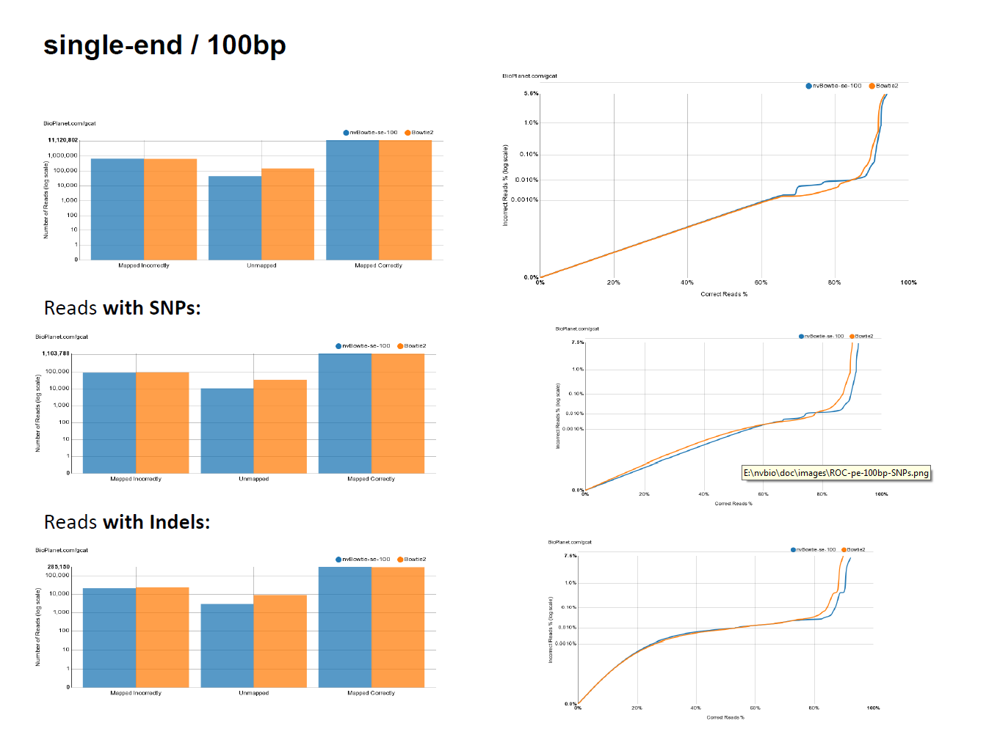
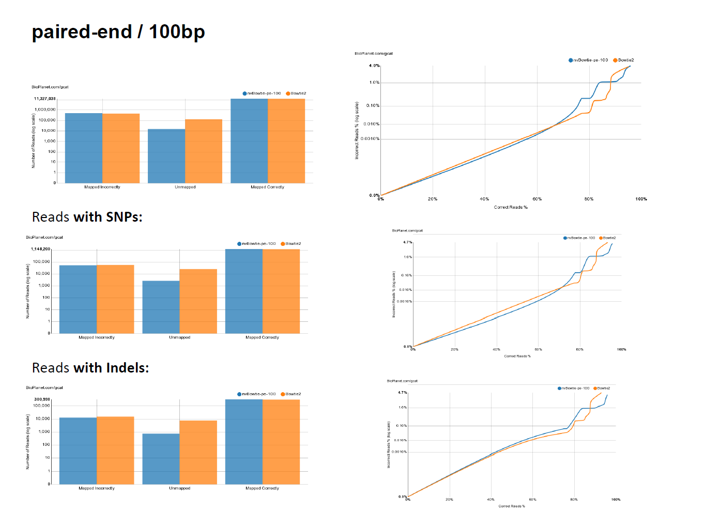
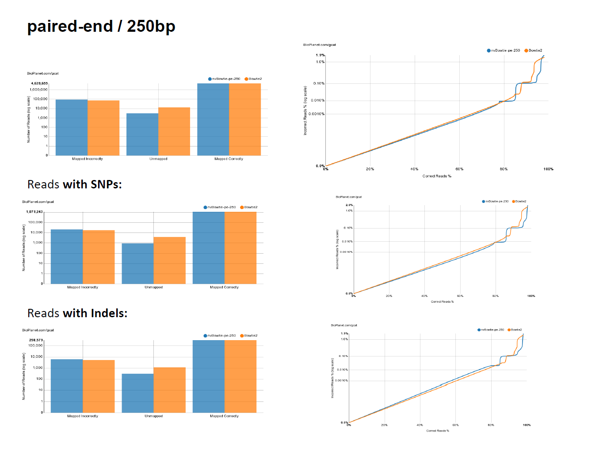

nvBowtie is a GPU-accelerated re-engineering of Bowtie2, a very widely used short-read aligner. While being completely rewritten from scratch, nvBowtie reproduces many (though not all) of the features of Bowtie2.
Performance
- nvBowtie is designed to exploit all the massive parallelism of modern GPUs, thus enabling a much higher alignment throughput at equal accuracy, or higher accuracy in the same time. Here's a graph showing nvBowtie's performance compared to bowtie2 on an Illumina HiSeq 2000 dataset (the first 10M reads of ERR161544) and an IonProton run, using both end-to-end and local alignment. The alignment results show 99.98% agreement at high MAPQ. All bowtie2 tests were run using 20 CPU threads, and default aligment options:
Specificity and Sensitivity
- While targeting maximum performance, nvBowtie is designed to match Bowtie2 as closely as possible, with the explicit goal of mantaining the same specificity and sensitivity characteristics. The following ROC curves have been generated using the excellent online testing platform GCAT. As can be seen, nvBowtie matches Bowtie2's results to within extreme accuracy for a wide range of read types and error distributions. The only noticeable (and still very tiny) differences are concentrated around very low mapping quality alignments.



Architecture
- In order to take advantage of the massive parallelism available in modern processor architectures, nvBowtie re-implements the same underlying algorithms as Bowtie2 taking a fundamentally different approach. In fact, while Bowtie2 is essentially designed to operate on a single read at a time (possibly having multiple CPU threads working on a different read), carrying the entire alignment process in what is basically a very complex chain of nested function calls, nvBowtie works at all times with large batches of reads, and treats their alignment as a complex pipeline composed by many relatively simple but deeply parallel stages. In many of these stages parallelism is spread at a much finer granularity than at the reads-level, for example by processing many candidate hits from each read at the same time.
- There are effectively a few different pipelines, one for each kind of alignment:
- best mapping of single-end reads
- best mapping of paired-end reads
- all mapping of single-end reads
- all mapping of paired-end reads (not implemented yet)
best-mapping, single-end reads
- This pipeline can be described by the following pseudo-code:
best-alignments = {}
seed-mapping-queue[in] :=
all reads
while (seed-mapping-queue[in] not empty)
{
(seed-mapping-queue[out], seed-deques) :=
map( seed-mapping-queue[in] );
score( seed-mapping-queue[in], seed-deques, best-alignments );
seed-mapping-queue[in] = seed-mapping-queue[out];
}
- where score() is a sub-pipeline:
score([in] input-reads, [in] seed-deques, [in/out] best-alignments)
{
while (
active-reads not empty)
{
}
}
- The various functions involved correspond to different pipeline stages:
- The data flowing through the pipeline goes mostly through a single-data structure of type ScoringQueues (Scoring Queues), which itself contains the active-reads (ScoringQueues::active_reads), the hits-queue (ScoringQueues::hits) and an index allowing to walk all the hits belonging to each read (ScoringQueues::hits_index).
best-mapping, paired-end reads
- This pipeline can be described by the following pseudo-code:
best-anchor-alignments = {}
best-opposite-alignments = {}
for (anchor in {mate1,mate2})
{
seed-mapping-queue[in] :=
all reads
while (seed-mapping-queue[in] not empty)
{
(seed-mapping-queue[out], seed-deques) :=
map( seed-mapping-queue[in] );
score( seed-mapping-queue[in], seed-deques, best-anchor-alignments, best-opposite-alignments );
seed-mapping-queue[in] = seed-mapping-queue[out];
}
}
- where again score() is a sub-pipeline:
score([in] input-reads, [in] seed-deques, [in/out] best-anchor-alignments, [in/out] best-opposite-alignments)
{
while (
active-reads not empty)
{
}
}
Usage
- At the moment, the command line options of nvBowtie differ from those of bowtie2. A comprehensive list can be obtained running:
* ./nvBowtie --help
*
* nvBowtie [options]
* options:
* General:
* -U file-name unpaired reads
* -1 file-name first mate reads
* -2 file-name second mate reads
* -S file-name output file (.sam|.bam)
* -x file-name reference index
* --verbosity verbosity level
* --upto | -u int [-1] maximum number of reads to process
* --trim3 | -3 int [0] trim the first N bases of 3'
* --trim5 | -5 int [0] trim the first N bases of 5'
* --nofw do not align the forward strand
* --norc do not align the reverse-complemented strand
* --device int [0] select the given cuda device(s) (e.g. --device 0 --device 1 ...)
* --file-ref load reference from file
* --server-ref load reference from server
* --phred33 qualities are ASCII characters equal to Phred quality + 33
* --phred64 qualities are ASCII characters equal to Phred quality + 64
* --solexa-quals qualities are in the Solexa format
* Paired-end:
* --ff paired mates are forward-forward
* --fr paired mates are forward-reverse
* --rf paired mates are reverse-forward
* --rr paired mates are reverse-reverse
* --minins | -I int [0] minimum insert length
* --minins | -X int [500] maximum insert length
* --overlap allow overlapping mates
* --no-overlap disable overlapping mates
* --dovetail allow dovetailing mates
* --no-discordant disable discordant alignments
* --no-mixed only report paired alignments
* --ungapped-mates | -ug perform ungapped mate alignment
* Seeding:
* --seed-len | -L int [22] seed lengths
* --seed-freq | -i func [S,1,local ? 0.75 : 1.15] seed interval function
* --max-hits int [100] maximum amount of seed hits
* --max-reseed | -R int [2] number of reseeding rounds
* Extension:
* --all | -a perform all-mapping (i.e. find and report all alignments)
* --local perform local alignment
* --rand randomized seed selection
* --no-rand disable randomized seed selection
* --max-dist int [15] maximum edit distance
* --max-effort-init int [15] initial maximum number of consecutive extension failures
* --max-effort | -D int [15] maximum number of consecutive extension failures
* --min-ext int [30] minimum number of extensions per read
* --max-ext int [400] maximum number of extensions per read
* --fast apply the fast presets
* --very-fast apply the very-fast presets
* --sensitive apply the sensitive presets
* --very-sensitive apply the very-sensitive presets
* --fast-local apply the fast presets
* --very-fast-local apply the very-fast presets
* --sensitive-local apply the sensitive presets
* --very-sensitive-local apply the very-sensitive presets
* Scoring:
* --scoring-scheme filename use a given scoring scheme
* --ma int match bonus
* --mp int,int max,min mismatch penalties
* --np int N penalty
* --rdg int,int read gap open / extension penalties
* --rfg int,int reference gap open / extension penalties
* --score-min func minimum score function
* Reporting:
* --mapQ-filter | -Q int [0] minimum mapQ threshold
* Debug
* --report filename generate an HTML report
*
- While most parameters should be easy to understand, a major difference is that nvBowtie relies on an external program to build the reference indices:
- nvBWT : builds the BWT indices of the reference FASTA files
- e.g. suppose you have the human genome in a single FASTA file, hg19.fa; the following commands will create all indices needed by nvBowtie:
* ./nvBWT hg19.fa hg19-index
*
- At this point, one can run nvBowtie:
* ./nvBowtie -x hg19 -U my_reads.fastq -S my_reads.bam
*
- Notice that nvBowtie supports direct output of BAM files, which has been carefully optimized and parallelized in order to cope with the superior alignment throughput.
- Another noteworthy option is to let nvBowtie fetch the reference index from a shared memory server which can be run in the background: the nvFM-server. It be launched with:
* ./nvFM-server hg19-index hg19 &
*
- nvBowtie can then pickup the reference from the server:
* ./nvBowtie -x hg19 -U my_reads.fastq -S my_reads.bam
*
scoring schemes
- The –scoring-scheme filename option allows to provide a custom Smith-Waterman scoring scheme through a text file, where each line must contain a token value pair. The tokens and default values are reported below:
* match 0 // local alignment: 2
* mm-penalty-min 2
* mm-penalty-max 6
* N-penalty-min 1
* N-penalty-max 1
* score-min-const -0.6 // local alignment: 0
* score-min-coeff -0.6 // local alignment: 10
* score-min-type linear // local alignment: log
* N-ceil-const 0
* N-ceil-coeff 0.15
* read-gap-const 5
* read-gap-coeff 3
* ref-gap-const 5
* ref-gap-coeff 3
* gap-free 5
*


 1.8.4
1.8.4